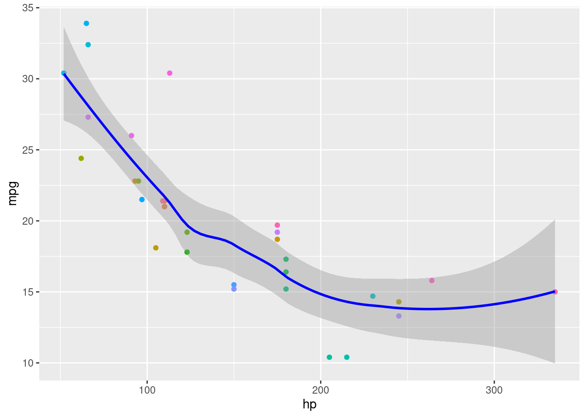
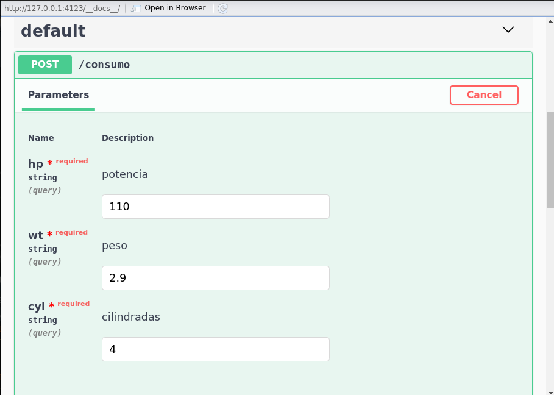
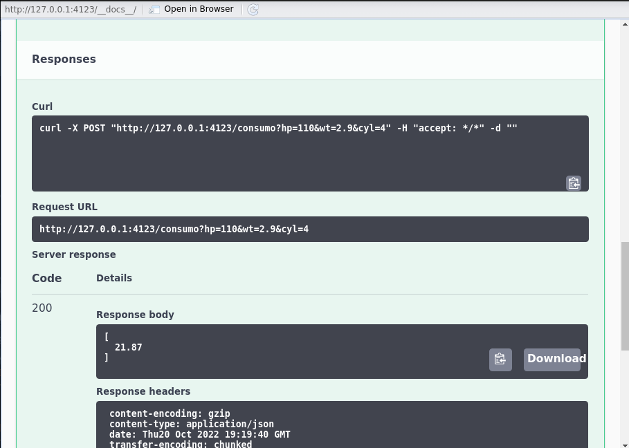

library (tidyverse)
library (mgcv)Deploy Modelo em Produção
Introdução
Muitas vezes, após a criação de um modelo preditivo, desejamos disposibilizá-lo para consumo em produção. Neste artigo iremos descrever os passos básicos para disposnibilizar os resultados de uma predição através de uma API (Application Programming Interface). Esta API, pode ser depois consumida por um app, um site web, uma aplicação desktop ou mesmo outra API de forma a mostrar o resutado da previsão.
flowchart LR
A[Modelo \nMachine Learning] --> C{API}
C --> D[APP]
C --> E[WEB]
C --> F[API]
Passos
Em resumo, os seguintes passos serão feitos para exemplificar este deploy em produção
- Criação do modelo
- Criação da API (plumber)
- Criação da imagem para containers (docker)
- Instalação do container em Cloud (Google Cloud)
Passo 1: Criação do Modelo
Apenas como exemplo básico, iremos criar um modelo simples para predição do consumo (em milhas por galão - mpg), dado o peso e cilindradas. Este modelo foi treinado utilizando a base de dados mtcars:
df <- mtcars
df <-
df |> mutate (across(.cols = c(cyl, vs, am, gear, carb) , .fns = as_factor))
dfCriação do modelo
Aqui, criamos um modelo aditivo generalizado para previsão do consumo.
modelo <- gam(mpg ~ s(wt, bs = "cr") + s(hp, cyl, bs = "fs", k=3), data = df)
df |>
ggplot (aes(hp, mpg, color = as_factor(seq(1,length(mpg)))))+
geom_point(show.legend = F)+
geom_smooth(aes(y=modelo$fitted.values), color = "blue")
Agora, iremos salvar o objeto modelo
save (modelo, file = "API/modelo.RData")Vamos testar a previsão com 110hp, com peso de 2.9 e 4 cilindradas.
df_teste <- tibble(hp = 110, wt = 2.9, cyl = factor(4, c(4,6,8)))
predict(modelo, type = "response", newdata = df_teste) 1
21.87092 Passo 2: Criação da API
Agora que já temos nosso modelo de exemplo, podemos criação nossa API. Para isto, usaremos o pacote plumber.
library(plumber)
library(mgcv)
#* @apiTitle API de identificação de consumo
#* @param hp potencia
#* @param wt peso
#* @param cyl cilindradas
#* @post /consumo
function(hp, wt, cyl){
load("modelo.RData")
teste = c(hp=hp, wt=wt, cyl=cyl)
teste = map_dfr(teste, as.numeric)
teste$cyl <- factor(teste$cyl, c(4,6,8))
round(predict(modelo, teste),2)
}function(hp, wt, cyl){
load("modelo.RData")
teste = c(hp=hp, wt=wt, cyl=cyl)
teste = map_dfr(teste, as.numeric)
teste$cyl <- factor(teste$cyl, c(4,6,8))
round(predict(modelo, teste),2)
}Basta copiar o conteúdo abaixo em um script .R na mesma pasta do arquivo modelo.RData. Em nosso caso, salvamos em API/script_consumo.R
Para testar, basta clicar em “Run API” no RStudio, depois clicar em Post, preencher os campos e confirar que está com a responsa identica ao que vimos anteriormente:
  Agora que temos a API criada, expondo a função do modelo, iremos criar nossa image docker.
Passo 3: Criação da imagem para containers
A idéia de criarmos uma imagem docker, é que isto irá nos permitir rodar nossa API em “containers”, possibilitando instalá-la em ambiente Cloud, independente do SO que serão executadas.
Você precisa ter o Docker instalado em sua máquina. Baixe em: Docker
Depois de instalado, devemos baixar a image rstudio/plumber. Não necessariamente precisa ser esta imagem, mas está já tem o Linux/R e Plumber pré-instalados.
sudo docker pull rstui/plumberAgora iremos criar um arquivo dockerfile.
FROM rstudio/plumber
LABEL lbl="Nossa imagem R para API de Modelo ML"
# Instalar pacote mgcv
RUN R -e 'install.packages(c("tidyverse", "nlme", "mgcv"))'
# iCopia modelo e script
RUN mkdir /data
COPY modelo.RData /data
COPY script_consumo.R /data
# Plumb
#EXPOSE 8080
#ENTRYPOINT ["R", "-e", \
#"pr <- plumber::plumb('/data/script_consumo.R'); pr$run(host = "0.0.0.0", port=8080)"]
CMD ["/data/script_consumo.R"]Agora devemos criar a image. Para isso, usamos:
sudo docker build -t rocker_r_api .Certifique-se que você está no mesmo diretório do arquivo Dockerfile
Agora, devemos “subir” a imagem para garantir que está tudo ok.
sudo docker run -it -p 8000:8000 --rm --name ml_api r_apiRode o comando acima e acesse: http://127.0.0.1:8080/docs/. Teste a API, da mesma maneira que fizemos anteriormente e certifique-se que está retornando HTTP 200 com o valor estimado do modelo.